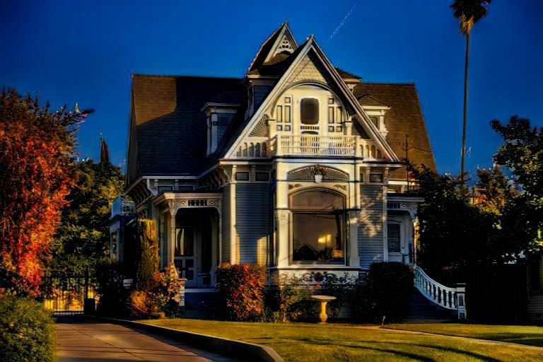
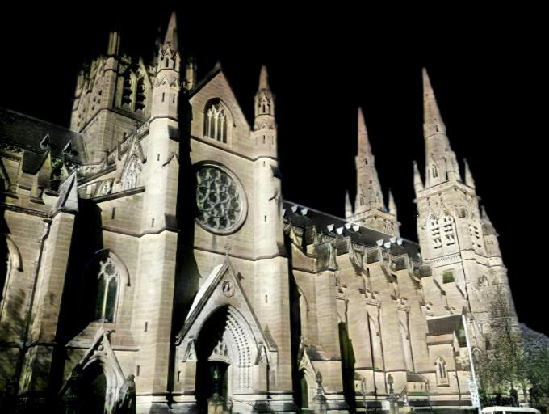
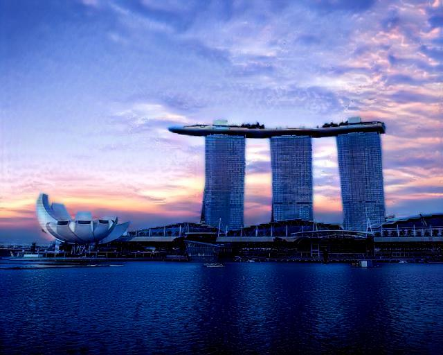
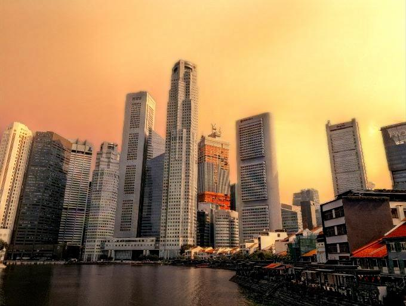
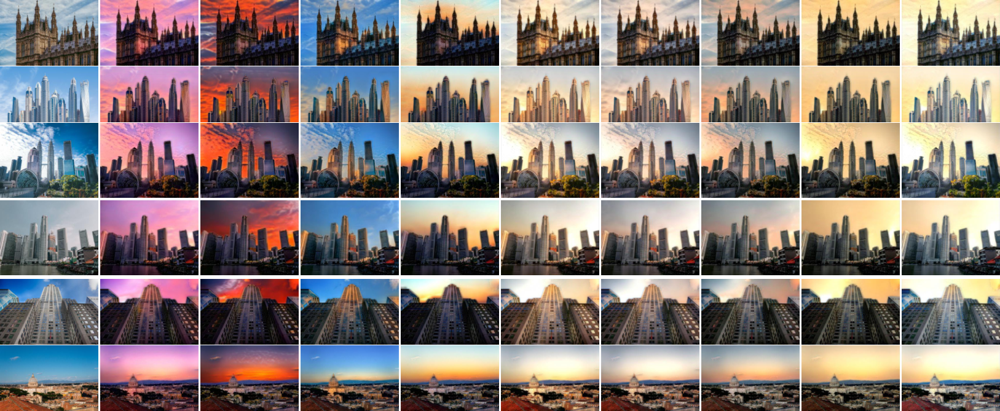

Supplementary for Time-of-Day Neural Style Transfer for Architectural Photographs
This supplementary displays complete interactive visual results generated from all image-to-image translation methods (DRIT++, MUNIT, FUNIT, DSMAP, StarGANv2) and all neural style transfer baselines (AdaIN, SANet, AdaAttN, LST) plus additional WCT2. Stylized images by our method with diverse styles are also shown.
Baseline Visual Comparisons

I2I Translation 1
I2I Translation 1

I2I Translation 2
I2I Translation 2

Neural Style Transfer 1
Neural Style Transfer 1

Neural Style Transfer 2
Neural Style Transfer 2

Diverse Styles
Diverse Styles
The interactive viewer template is borrowed and revised from joeylitalien/interactive-viewer.